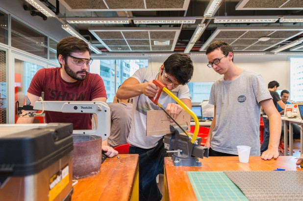

A Estação Meteorológica consiste num circuito com sensores de luminosidade, pressão e temperatura que medem e imprimem num Display LCD as condições do ambiente em que se encontra.
A Girafa é um objeto que foi criado em etapas passando por todas as ferramentas e máquinas do FabLab durante o Job Rotation.
A melhoria para a carroça de catadores é um projeto que consiste num aparato mecânico, desenvolvido nos laboratórios de engenharia com o intuito de facilitar a vidade de coletores de materiais recicláveis.